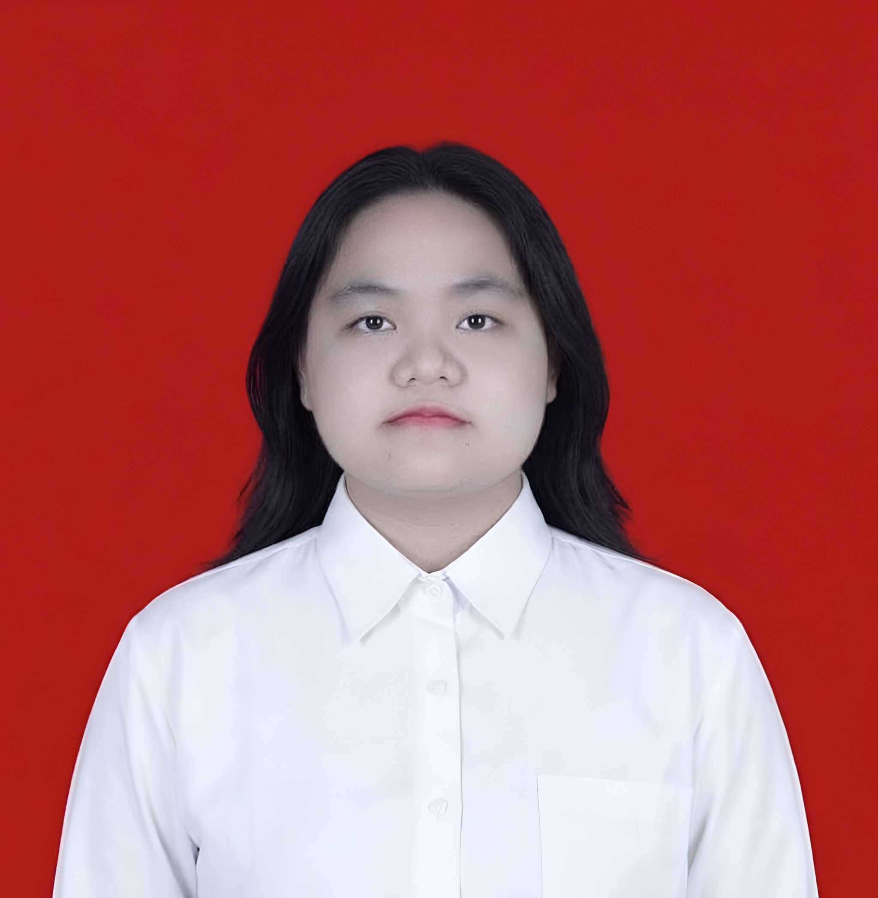

HALO, SELAMAT DATANG DI PORTOFOLIO SAYA
Saya Erika Hensan.
Junior System Analyst & Business Analyst
Saya tertarik memahami kebutuhan pengguna, merancang solusi sistem, dan mengubah proses yang rumit menjadi pengalaman digital yang lebih terstruktur.
3,57/4,00IPK
90,17%Hasil UAT skripsi
2022–2026Sistem Informasi

EHTambahkan foto
profil di sini
profil di sini
✦ Curious mind
Building better systems
Building better systems
SEDIKIT TENTANG SAYA
Menghubungkan kebutuhan pengguna dengan solusi teknologi.
Saya lulusan S1 Sistem Informasi Universitas Buddhi Dharma dengan peminatan E-Bisnis. Saya memiliki pengalaman dalam requirement elicitation, pemodelan UML, dokumentasi, pengembangan web, serta pengujian aplikasi.
Kenali saya lebih jauh →KARYA PILIHAN
Proyek yang pernah saya kerjakan
BH01 / WEB SYSTEM
Skripsi · 2025–2026
Beauty Homies
Sistem reservasi salon berbasis web menggunakan Laravel dan MySQL.
ST02 / CAPSTONE
Capstone · 2025
Sistem Informasi Stunting
Perancangan sistem edukasi stunting untuk Puskesmas Gembor.
MA03 / MOBILE APP
Capstone · 2025
Masjid Agung Al-Ittihad
Rancangan aplikasi mobile informasi kegiatan dan layanan masjid.